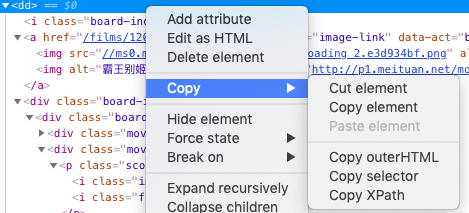

Scrapy爬取猫眼TOP100榜
猫眼电影TPO100排行榜是根据观众打分进行排序的一个中国电影排行榜。本文试图爬取该榜单信息。
首先生成Scrapy项目和爬虫：
# 生成scrapy项目
$ scrapy startproject movie
# 生成scrapy爬虫
$ scrapy genspinder maoyan100 http://maoyan.com/board/4
从页面中可以观察到，排行榜中电影的基本信息有电影名称(title)，主演(star)，上映时间(release_time), 评分(score)，所以在items.py中定义要爬取的信息为
class MovieItem(scrapy.Item):
title = scrapy.Field()
star = scrapy.Field()
release_date = scrapy.Field()
score = scrapy.Field()
接下来一步就是提取信息，也是最关键的一步。为了试验提取信息，首先尝试用scrapy shell交互提取信息。
$ scrapy shell "http://maoyan.com/board/4"
如果返回403信息，表明网站禁止了爬虫，需要改变user-agent信息，可以在site-packages\scrapy\settings\default_settings.py中配置默认的user_agent，省去每一次的配置，也可以直接添加命令行选项
$ scrapy shell "http://maoyan.com/board/4" -s USER_AGENT='Mozilla/5.0'
打开网站，选择Inspect，仔细观察排行榜的css源代码

可以发现每一步电影都以<dd>开头，电影所有详细信息都在<div class='board-item-content'>里面。试着在scrapy shell中提取这些信息，验证我们的猜想是正确的。在<dd>处右键选择copy-copy XPath，复制的内容为//*[@id="app"]/div/div/div[1]/dl/dd[1]，很明显最后一个[1]表明第一步电影，去掉[1]，可以匹配所有的电影。

在scrapy shell中试着提取电影信息
# 所有电影信息
movies = response.xpath('//*[@id="app"]/div/div/div[1]/dl/dd')
# 第一步电影
movie = movies[0].css('.board-item-main .board-item-content')
# 提取电影名称
title = movie.css(' .movie-item-info .name a::text').extract()[0]
# 提取主演
star = movie.css('.movie-item-info .star::text').extract()[0].strip().strip('\n')[3:]
# 提取上映时间
release_time = movie.css('.movie-item-info .releasetime::text').extract()[0][5:]
# 提取电影评分
ratings = movie.css('.movie-item-number .score')
score = ratings.css('.integer::text').extract()[0] +
ratings.css('.fraction::text').extract()[0]
在获取全部电影信息以后，选择其中一步电影，依次提取所需要的信息。试验完成了以后，我们就可以把正确的步骤写到爬虫中去，节省了反复调试的时间：
class Maoyan100Spider(scrapy.Spider):
name = 'maoyan100'
allowed_domains = ['maoyan.com']
start_urls = ['http://maoyan.com/board/4/']
def parse(self, response):
for movie_info in response.xpath('//*[@id="app"]/div/div/div[1]/dl/dd'):
movie = movie_info.css('.board-item-main .board-item-content')
ratings = movie.css('.movie-item-number .score')
item = MovieItem()
# 提取电影名称
item['title'] = movie.css(' .movie-item-info .name a::text').extract_first()
# 提取主演
item['star'] = movie.css('.movie-item-info .star::text')
.extract_first().strip().strip('\n')[3:]
# 提取上映时间
item['release_date'] = movie.css('.movie-item-info .releasetime::text')
.extract_first()[5:]
# 提取电影评分
item['score'] = ratings.css('.integer::text')
.extract_first() + ratings.css('.fraction::text').extract_first()
yield item
好了，写完爬虫了，开始正式运行scrapy爬取了！到根目录下，运行：
scrapy crawl maoyan100 -o maoyan100.json
其中的-o选项表示输出到maoyan100.json文件。运行完成以后，可以看到在spiders目录中多了一个maoyan100.json文件。如果发现Json文件乱码，可以在settings.py中添加设置FEED_EXPORT_ENCODING = 'utf-8'。
但是我们现在只爬取了第一页的信息，TOP100排行榜有10页的内容，每一页只有10部电影。那么，下一页的内容该如何抓取？我们试着点击下一页发现网址变成了http://maoyan.com/board/4?offset=10,再次点击，发现变成了http://maoyan.com/board/4?offset=20。答案非常明显了，网页最后一个数字是10的倍数，倍数即页码。在`class Maoyan100Spider`下增加一个方法:
def start_requests(self):
for x in range(0, 10):
url = "http://maoyan.com/board/4?offset={0}"
yield scrapy.Request(url.format(x * 10))
方法start_requests()的目的与start_urls相同，写了start_requests()后需要把start_urls删除。start_requests()返回 iterable of Requests。好了，一个简单的scrapy爬虫完工了。


Copyright © 2015 Powered by MWeb, Theme used GitHub CSS.